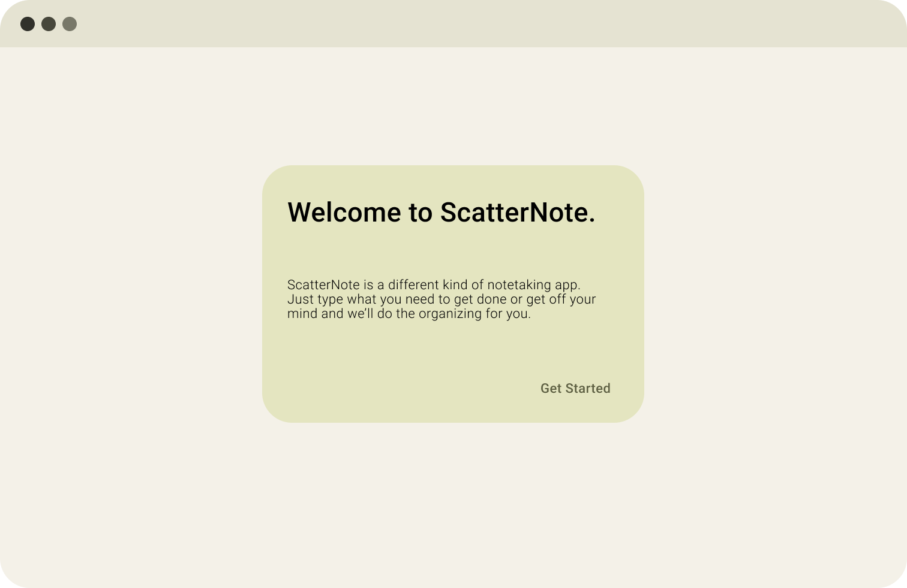
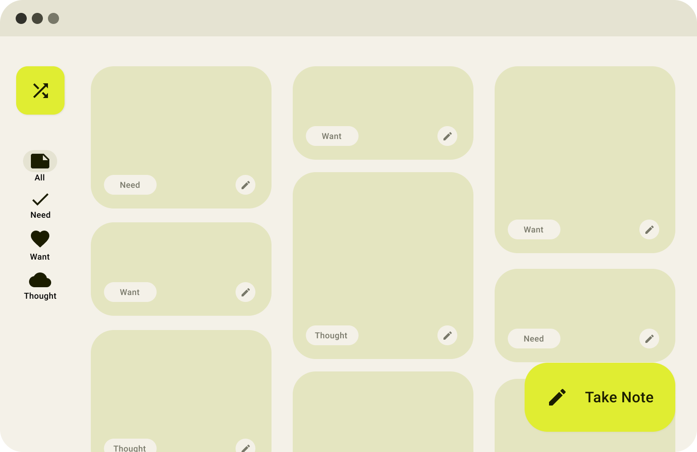
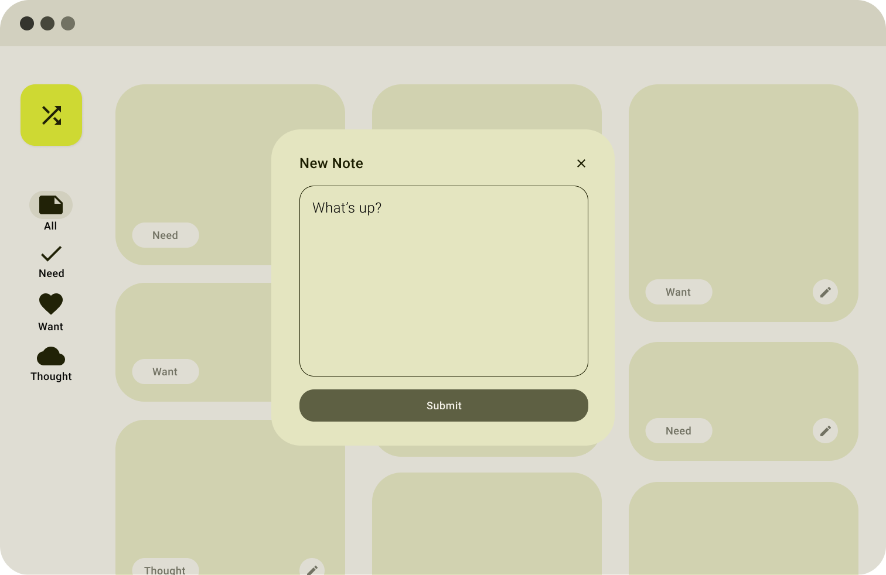
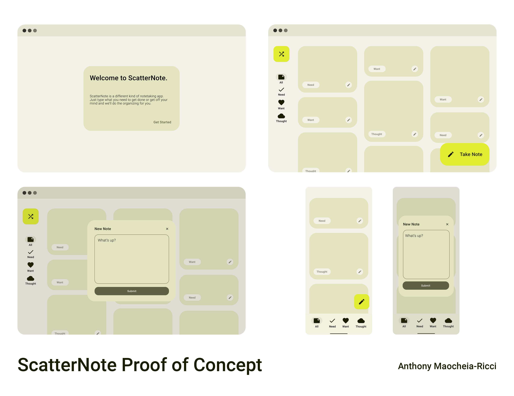
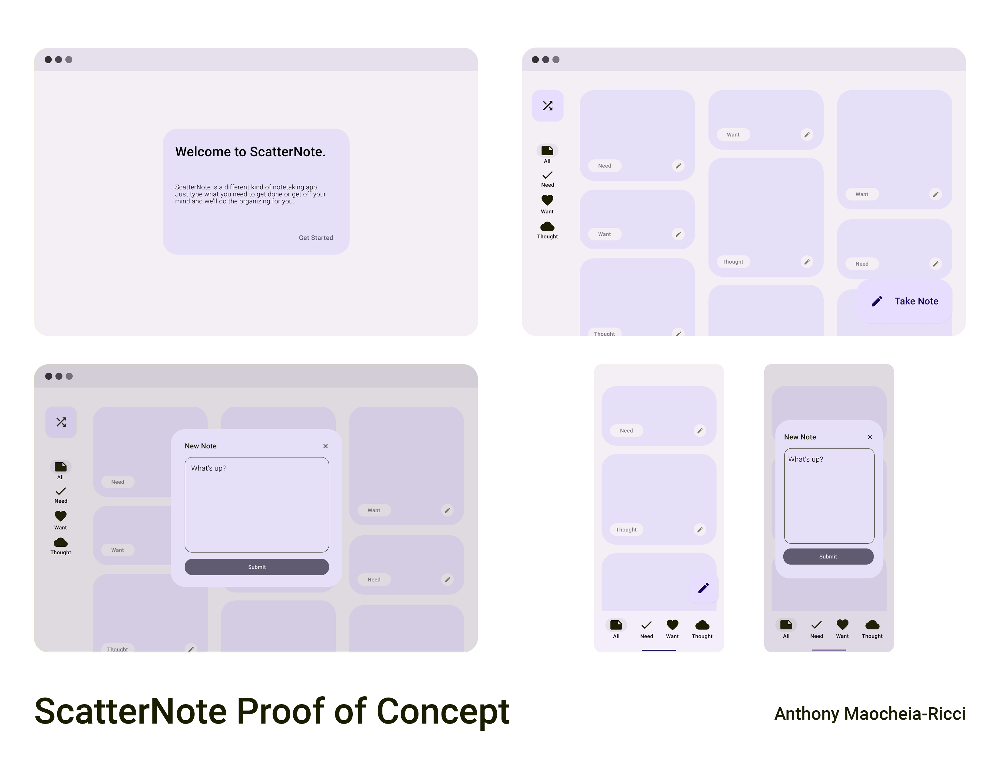

scatternote is a proof of concept for a notes app that helps organize your ideas with the power of an AI.
throughout university, i've realized i'm the kind of person who loves to write/journal my thoughts when i feel overwhelmed with life. i've tried using various platforms to dump the contents of my mind, from a private twitter or instagram account, to a specific page on my notion called "thought dump", yet they never seem to actually meet my needs.
so, meet scatternote. a notes app where you simply write whatever your mind wants, and the app will automatically sort it into various categories: need(s), want(s) and thought(s).
for this proof of concept, the goal was to use the new material you guidelines. i recently upgraded my phone to the pixel 6 pro, and have been enamoured with the small tweaks material you does to the UI of the phone; the colours being your own choices is what drove me to put this proof of concept together, as this app is your mind dump, all the way to the scheme.
i've also mocked up what a mobile version of the app would look like, using the material you guidelines and changes to navigation bars.
as well as a change of colour to purple, showing off the dynamic colouring of material you. this project was done mainly using figma, with photoshop being used to put the proof of concept together on one page. the figma file can be viewed here!